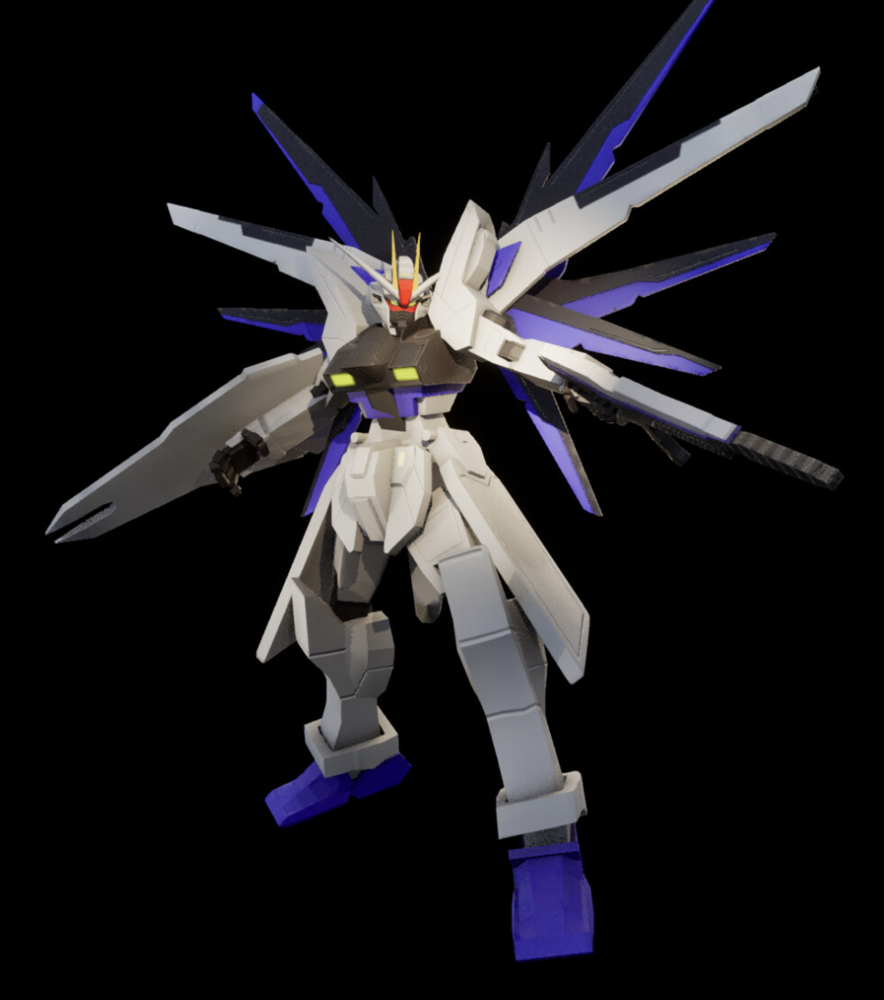

This piece was inspired by the ZGMF-X10A Freedom Gundam which can be found https://gundam.fandom.com/wiki/ZGMF-X10A_Freedom_Gundam. This model was created first created in blender as a low poly hard surface model. Using a modifier stack I made a high poly version of the model and created three separate texture sets. A classic gundam color texture, an army green texture, and a texture representing the company Discord. Each set contain five 4k maps created in Substance Painter. I rigged and posted the model in blender and finished with rendering and high resolution screenshot capturing in Unreal 5. I had a really great time making this model and going outside of my comfort zone. I am really happy I got a chance to learn more about substance painter and learn how to make the most out of the tool!